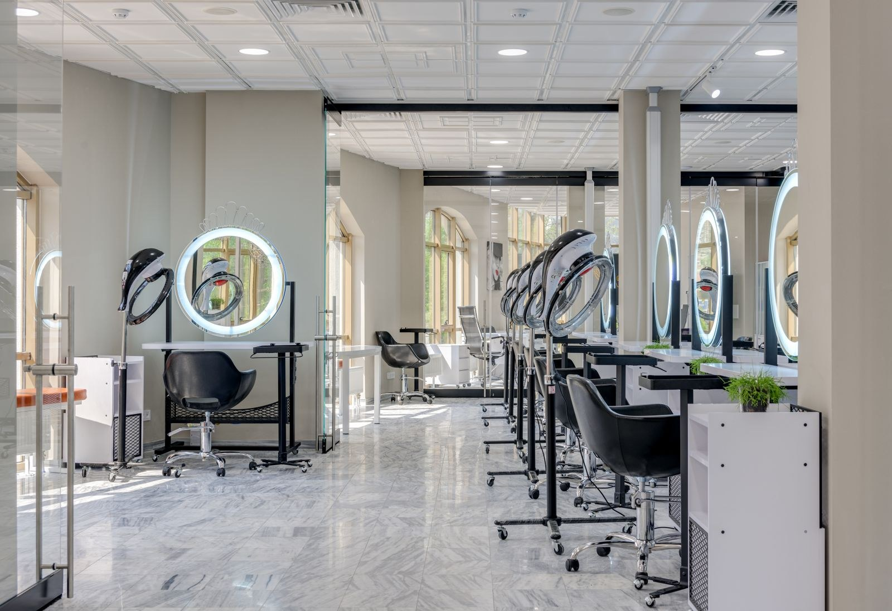

Geknipt.
Voor jou.
Een nieuwe vorm, een andere kleur.
Of precies zoals je het graag hebt.
Nieuwe vorm.
Zelfde jij.
Bekijk behandelingenKNIPPEN.
We kijken naar de vorm van je gezicht, je haar en hoe je het zelf draagt. Neem een voorbeeld mee of ontdek samen wat bij je past.
Bespreek je knipbeurtKLEUREN.
Een subtiel verschil of een grotere verandering. We bespreken eerst wat er mogelijk is en welk onderhoud erbij hoort.
Bespreek je kleurOVERLEGGEN.
Je hoeft nog niet precies te weten wat je wilt. Neem beelden mee die je aanspreken; we kijken naar lengte, structuur en de mogelijkheden.
Eerst even overleggen
Een plek.
Even voor jou.
Hoe draag
je het zelf?
Los. Met een borstel. Snel voordat je de deur uitgaat. Vertel het erbij, dan nemen we dat mee in het gesprek.
Een afspraak begint met even overleggen. Zo weten we allebei waar we aan beginnen.
Laten we kennismakenVoor jouw
volgende coupe.
Knippen, kleuren of eerst even overleggen. Vertel wat je wilt veranderen en hoe je je haar zelf draagt.
Een foto meenemen van wat je mooi vindt, helpt bij het gesprek.